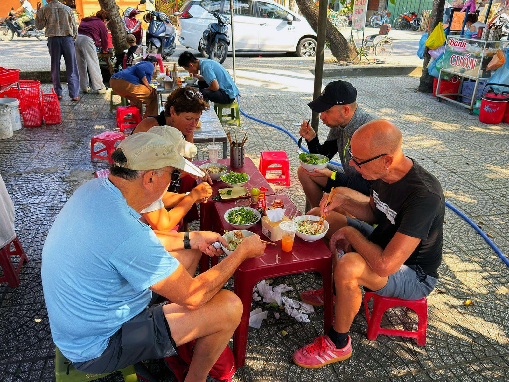
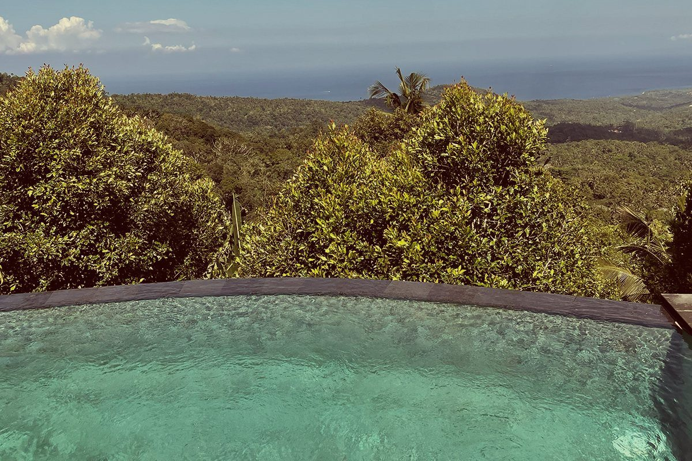
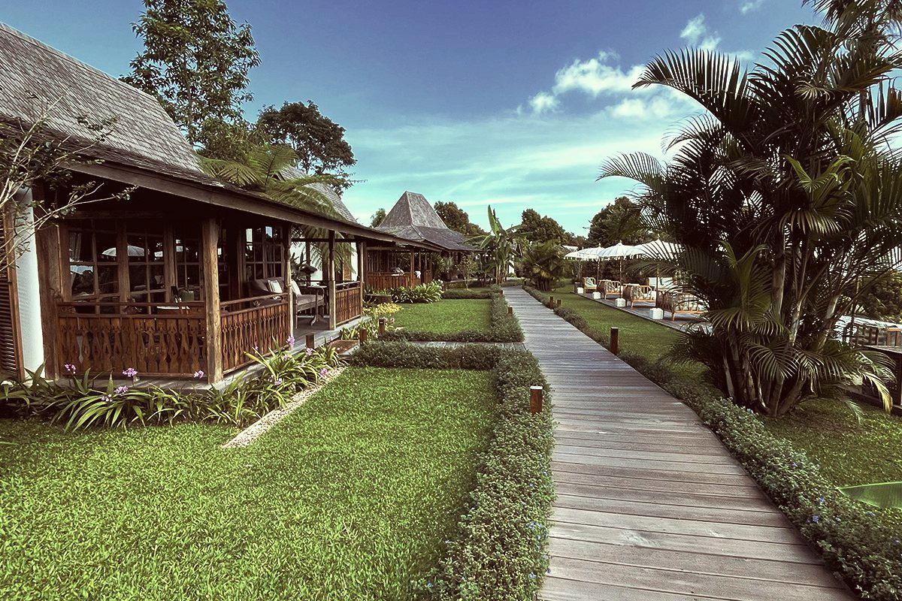
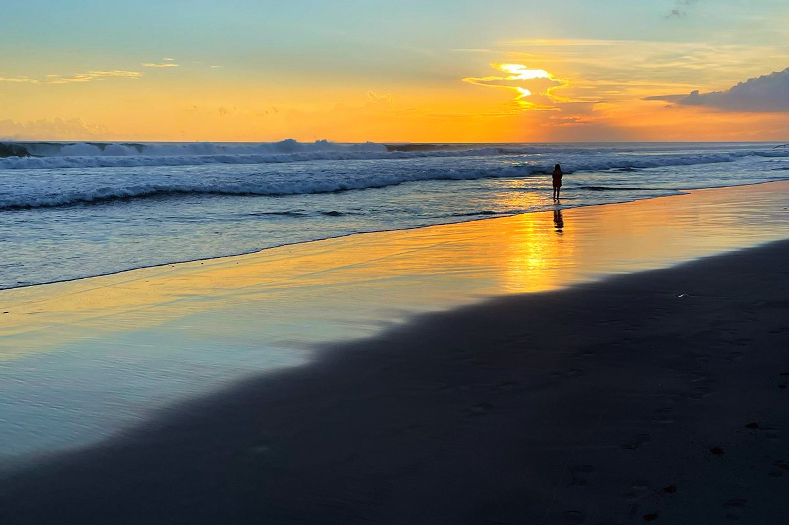
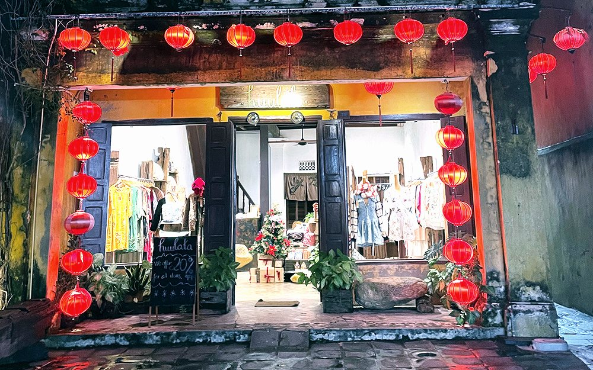
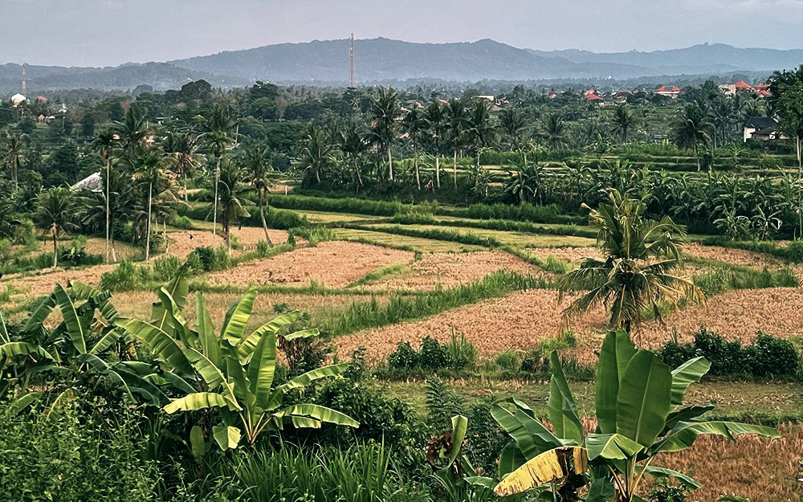
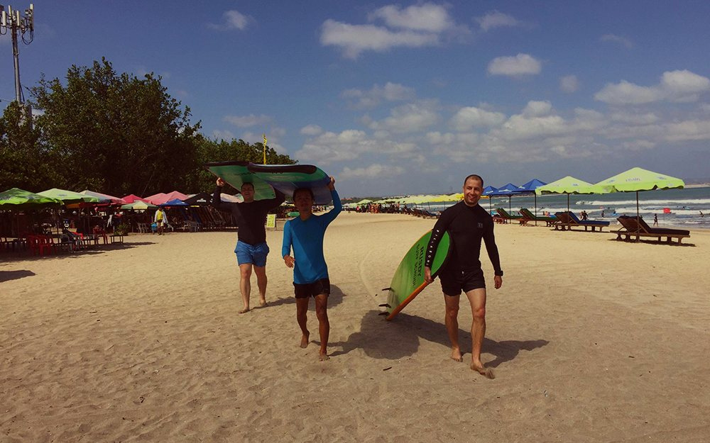
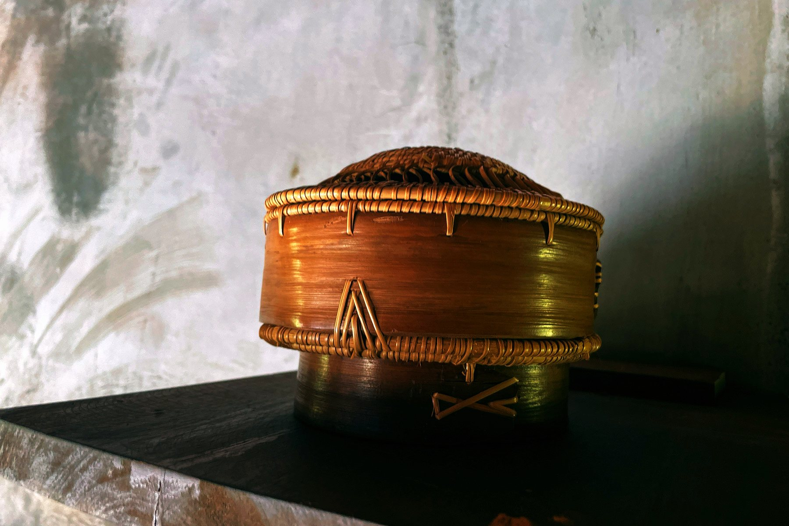
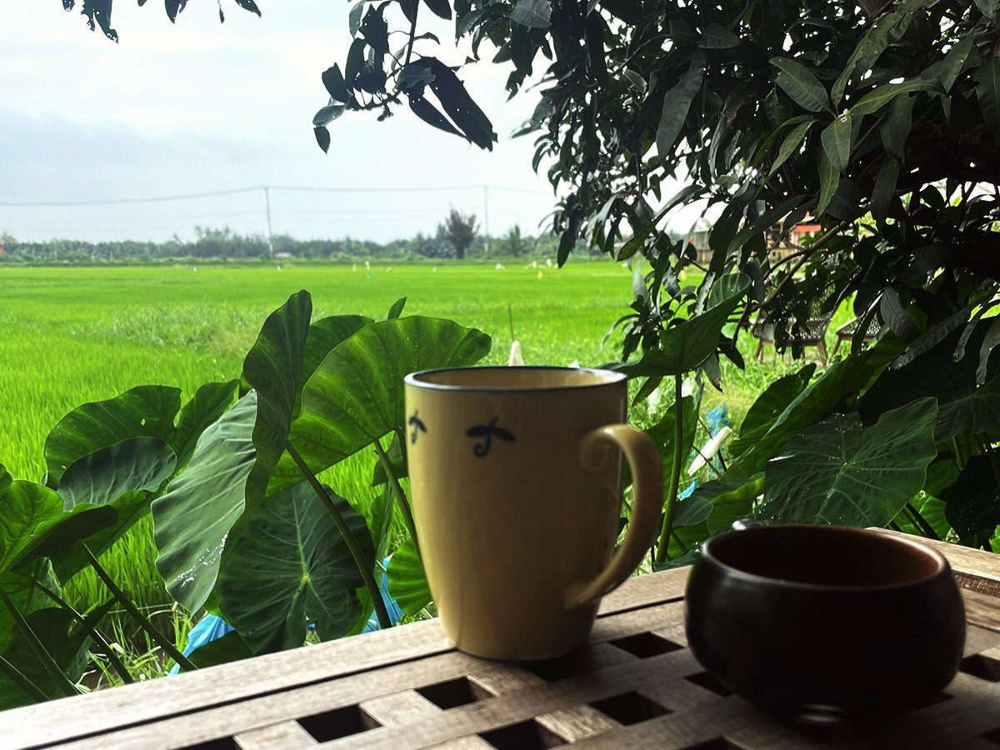
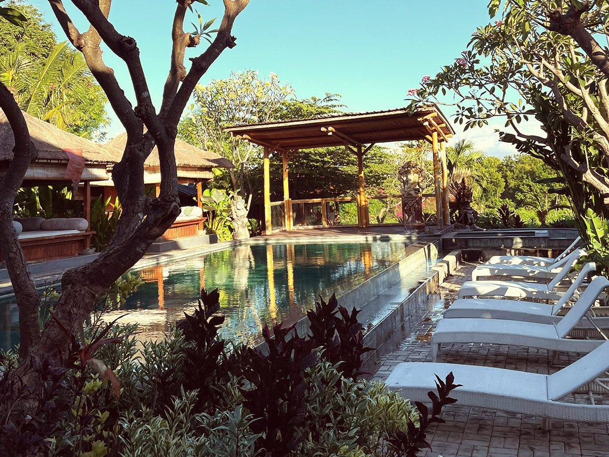

C.U.D.
Curated Human Experiences
return to yourself
Travel slower.
Feel deeper.
Return to yourself.
C.U.D. is not about escaping your life.
It's about returning to yourself.

About C.U.D.
More than travel.
It's a way of living.
C.U.D. is not about escaping your life.
It's about meaningful experiences and conversations,
slow mornings and deep connections.
I don't collect places.
I collect people and moments that
truly stay with you.
C.U.D. Experience (short for “Curated Human Experiences”) is my small, independent slow-travel brand. I design and personally host small-group experiences in Asia, built around real conversations, local culture and unhurried days. The first one, C.U.D. Origins™, takes place in Hoi An, Vietnam, on 20–30 March 2027 for a maximum of nine guests. This website is informational: applications are read personally by me and are not bookings.
Discover the philosophy
The C.U.D. Philosophy
I believe meaningful journeys begin with human connection.
I believe in slower mornings.
Shared meals.
Local stories.
Honest conversations.
And moments that stay with me long after the journey ends.
Slow Living
I believe in slowing down
to live on purpose.
Human Connection
Real people.
Real conversations.
Real moments.
Local Culture
I dive into the culture,
traditions and stories
that make a place unique.
Meaningful Experiences
Not about doing more.
It's about doing what
truly stays with you.
Returning to Yourself
I design experiences
that help you reconnect
with who you truly are.
Three Ways to Experience C.U.D.
Different backgrounds. One heart.

C.U.D. Experiences
Intimate experiences in Asia
designed to reconnect you
with yourself and what matters.

The C.U.D. Collection
Exceptional stays and places
personally visited and
curated by my C.U.D. standards.

C.U.D. Private Journeys
Tailor-made travel experiences
created around you,
your pace and your story.
Upcoming C.U.D. Experiences 2027

C.U.D. Hoi An Experience
Hoi An, Vietnam
–
Applications open

C.U.D. Bali Experience
Bali, Indonesia

C.U.D. Surf & Ride Bali
Bali, Indonesia
C.U.D. Kampot
Kampot, Cambodia

Shades of Human Life
Stories. Reflections. Emotions.
A journal of life, travel and the small moments
that shape who I am.
Words that stay. Just like the places I love.
Conversation Cards™
Meaningful conversations
that create real connections.
Beautifully designed cards
to spark deeper talks —
with yourself or with others.

Curated by C.U.D.
Places with soul.
Personally curated by me.
Every place in the collection is personally visited,
experienced and chosen for its
beauty and energy.

The Journey
Stay close to the journey.
Stories, new experiences and occasional
notes from C.U.D. No noise.
Just things worth sharing.
The controller of your data is Piotr Kamiński. By joining, you agree to the processing of your email address to send you these updates, and to its possible transfer outside the European Economic Area by my service providers. Details in the Privacy Policy.